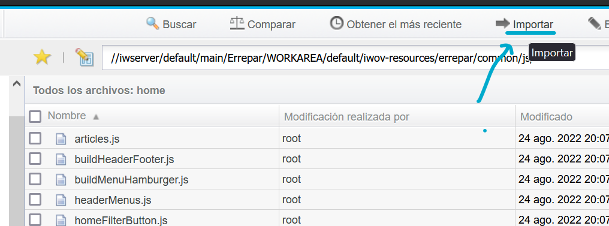
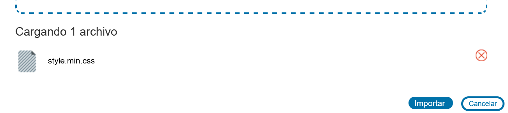
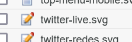
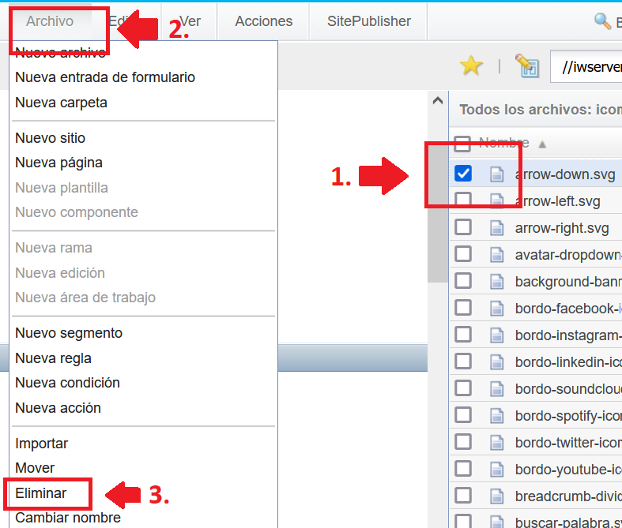
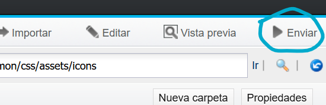
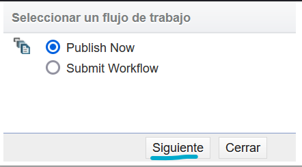
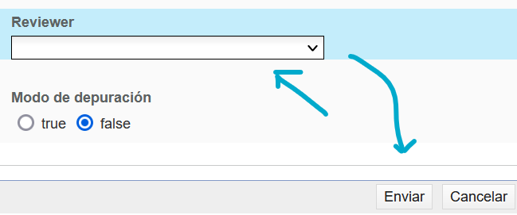

Assets
Descripción general
Los assets serían aquellos archivos como íconos, imágenes o fuentes que una página puede utilizar. Sin embargo el procedimiento para importar, reemplazar o eliminar assets de Teamsite, aplica también para scripts, hojas de estilos, o cualquier otro tipo de archivo como los XSL o XSLT.
Ubicación
Los assets se encuentran en una de las carpetas principales de Teamsite iwov-resources/errepar: //iwserver/default/main/Errepar/WORKAREA/default/iwov-resources/errepar
Importar nuevos assets
-
Dirigirse a una de las siguientes rutas:
- Para la Home y otros: //iwserver/default/main/Errepar/WORKAREA/default/iwov-resources/errepar/home/css
- CSS común a todas las páginas como header-footer.css: //iwserver/default/main/Errepar/WORKAREA/default/iwov-resources/errepar/common/css
-
Para scripts de la home:
//iwserver/default/main/Errepar/WORKAREA/default/iwov-resources/errepar/common/js/home -
Para otros scripts:
//iwserver/default/main/Errepar/WORKAREA/default/iwov-resources/errepar/common/js
Para hojas de estilos (CSS):
Para javascript:
- Hacer click en importar: 
- Arrastrar el nuevo archivo o el archivo a reemplazar y presionar "importar" nuevamente 
- Luego de importado presionar "Cancelar" para volver.
-
El nuevo archivo o el archivo actualizado aparecerá con un ícono de
editado como muestra la imagen:

Esto significa que los cambios no se han publicado.
- Publicar los cambios
Reemplazar un asset
Para actualizar un asset se debe reemplazar el anterior.
Para hacerlo, se importa el asset con el mismo nombre que el asset a sobreescribir y se presiona sobreescribir antes de "importar"
Eliminar assets
- Dirigirse a la ruta donde se encuentra el activo a eliminar.
- Seleccionar el archivo, ir a la pestaña "Archivo" y presionar "Eliminar" 
- Se abrirá un mensaje de confirmación. Presionar "Eliminar"
- Publicar los cambios después de eliminar.
Publicar los cambios
- Para publicar los cambios, sin movernos de la ruta actual donde se encuentra el archivo nuevo/editado/eliminado, presionar el botón de "Enviar". 
- En la ventana emergente seleccionar un workflow: "Submit Now" o "Custom Workflow" o "Article Publishing" y "Siguiente". 
- En caso de que se solicite, seleccionar un usuario como reviewer. Preferentemente el usuario de uno mismo ya que esto otorga permisos para aprobar la tarea si hace falta. Opcionalmente agregar una descripción a la tarea que se realiza. Presionar "Enviar". 
- El icono de editado debería desaparecer del activo nuevo/editado y este debería publicarse. En caso de ser un activo eliminado, este debería desaparecer. Recargar la página si no se muestran los cambios realizados.